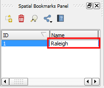

<p>
    In the <b>Spatial Bookmark Panel</b>, do: 
</p>
<ol>
    <li>Type in a name for the newly created bookmark. Let's call it <code>Raleigh</code>.</li>
    <li>Press <b>ENTER</b> to apply.</li>
</ol>
<p>
    
</p>
<p>
    Once you have finished, click <b>Next step</b>.
</p>